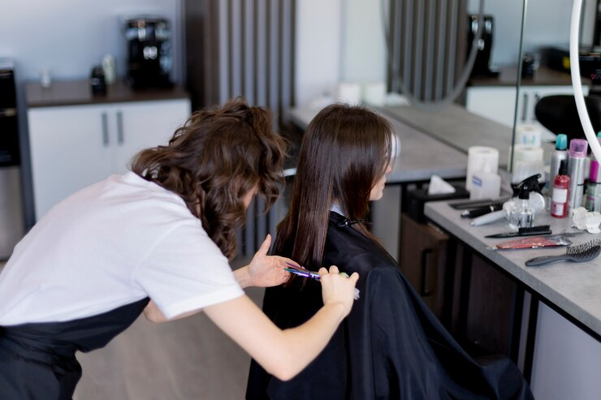

UBICACIÓN
Ubicada estratégicamente en la dinámica ciudad de San Martín, "Tu Estilo" se erige como un bastión de vanguardia en el sector de la belleza capilar. Fundada por Elizabeth Ilardi, una distinguida estilista con más de 20 años de experiencia, nuestra peluquería se ha consolidado como un referente de excelencia y profesionalismo en la región.
INICIOS
Desde sus inicios, Elizabeth ha cultivado un equipo de aprendices y profesionales dedicados, quienes han sido meticulosamente entrenados en las técnicas más avanzadas de corte, coloración y estilismo. Comenzando con los fundamentos del arte del cabello, nuestros aprendices han evolucionado hacia niveles de habilidad más complejos bajo la guía experta de Elizabeth.
experiencia
En "Tu Estilo", no solo nos enorgullece ofrecer servicios de alta calidad, sino también crear experiencias personalizadas para cada cliente. Nos esforzamos por comprender y superar las expectativas de quienes confían en nosotros para transformar y realzar su estilo personal.

REPUTACIÓN
A lo largo de los años, hemos cultivado una reputación envidiable gracias a nuestra dedicación inquebrantable a la artesanía del cabello y nuestro compromiso con la satisfacción del cliente. Cada visita a "Tu Estilo" es una oportunidad para experimentar la sinergia entre la pasión por la estética y la excelencia técnica.
UNITE
Únase a nosotros en "Tu Estilo" y descubra cómo podemos ayudarle a alcanzar su máximo potencial estilístico, donde cada cabello cuenta la historia de nuestra experiencia y compromiso con la belleza.